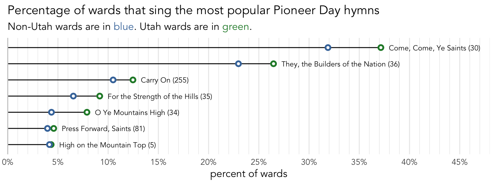

What hymns are sung around Pioneer Day?
holidays
frequency
Pioneer Day is coming up, so it’s worth it to look and see what wards typically do with regard to their congregational hymns. We have a few hymns that are explicitly related to pioneers, so we’d expect those to be more popular. Since Pioneer Day is technically a Utah state holiday, the bulk of this post will be based on the 393 sacrament meetings that fall within a week of July 24th from the 148 wards in Utah I have data from. However, towards the end, I’ll take a broader look and see if these patterns are the same even outside of Utah.
Pioneer Day Hymns
First, let’s first figure out what hymns are considered Pioneer Day hymns. The figure below shows the most common hymns sung within a week of Pioneer Day, excluding sacrament hymns. Probably to no one’s surprise, the most common one is
If you go to the Topics index at the back of the hymnal and look under the entry “Pioneers,” you see a list very close to what is actually sung. The one hymn that is listed in the index that is not sung very much is
There are a few other hymns that are more popular around Pioneer Day but are just not as common overall so they don’t show up on that plot. The following table shows the hymns that are more likely to be sung within a week of the 24th than during the rest of the year combined. Hymns that show up this table include
| Hymns most likely be sung around July 24th | |
| Compared to the rest of the year combined | |
| hymn | times more likely |
|---|---|
| They, the Builders of the Nation (36) | 34.07 |
| Come, Come, Ye Saints (30) | 19.49 |
| O Ye Mountains High (34) | 17.40 |
| For the Strength of the Hills (35) | 16.29 |
| Carry On (255) | 13.72 |
| Come, All Ye Saints of Zion (38) | 5.34 |
| Oh Say, What Is Truth? (272) | 3.19 |
| We Are Marching On to Glory (225) | 3.05 |
| Turn Your Hearts (291) | 2.55 |
| O God, Our Help in Ages Past (31) | 2.55 |
| In Our Lovely Deseret (307) | 2.42 |
| Press Forward, Saints (81) | 2.18 |
Pioneer Season
Now that we’ve established what the most typical Pioneer Day hymns are, we should actually determine when the Pioneer Day “season” is. First, we’ll boil all the hymns down as either “Pioneer Day” or “not Pioneer Day.” They’re considered Pioneer Day hymns if they’re one of the top seven hymns shown in Figure 1 above. For each day of the year, I’ll simply calculate the proportion of Pioneer Day hymns out of the total number of congregational hymns. Since I have data from the past 20 or so years, I have data on every calendar day, so even though the Sunday before Pioneer Day is the 21st this year, if I look back at previous years, I can fill in the gaps. Figure 2 shows the rise and fall of the number of Pioneer Day hymns by date.
This is remarkably similar to other plots we’ve seen around other holidays, like the Fourth of July, the martyrdom of Joseph Smith, and New Year’s Day. The solid green line shows Pioneer Day itself and the dashed lines show a week before and after. Looks like about half of all congregational hymns on Pioneer Day itself are one of those seven hymns listed above. Considering that between 25%–33% of hymns any week are sacrament hymns, that’s a pretty high number.
What is interesting is that the dots are higher during the week before than the week after. So, while there is a clear rise and fall, with the most number of hymns being sung on or just before the holiday itself, the dropoff afterwards is a little steeper for Pioneer Day, so wards sing about as many Pioneer Day hymns six days before the 24th as they do two or three days after. This year (2024) was a good example of this trend. Pioneer Day was on Wednesday, so the Sunday before (the 21st) was just as close as the Sunday after (the 28th). Sure enough, about half as many wards sang Pioneer Day related hymns on July 28th than on July 21st.
Overall, if we average everything out, it looks like most wards sing two or three Pioneer Day hymns. About 63% of sacrament meetings in Utah see at least one Pioneer Day hymn around this time of year.
Outside of Utah
Now, everything we’ve talked about so far has been based on wards in Utah. That makes sense since Pioneer Day is a Utah state holiday. Do wards outside of Utah also sing these same hymns around July 24th? Currently, I have data from 393 sacrament meetings Utah and 505 from outside of Utah. Let’s take a look and see how the non-Utahn wards compare.
Figure 3 is just like Figure 1, except it is based on data from the other 49 states in the US outside of Utah. If you’re like me, you probably don’t see much of a difference. The same hymns are the most popular and, perhaps more interestingly, they’re nearly popular as they are in Utah.

To make the comparisons a little easier, Figure 4 show those top seven hymns with the Utah numbers and the non-Utah numbers together. Here, the Utah frequencies are in green and are in all cases higher than the non-Utah frequencies, which are in blue. These hymns are slightly less common outside of Utah, but they are pretty close.

Another way of looking at this is to just focus on the differences. So, for example, about 36.3% of wards in Utah sing
Here, we see that
A \(\chi^2\) test fails to find an association between whether a ward sings Come, Come, Ye Saints (#30) and whether they’re in Utah (\(\chi^2\) = 3.27, df = 1, p = 0.07).
Again, it is striking to me that these hymns are still relatively common outside of Utah, especially given that this is a Utah state holiday. Yes, there are lots of Utah transplants all over the country, but are so many of them in callings that decide what hymns are sung? No, I think there are a significant number of people outside of Utah—who have never lived in Utah—who are still choosing to sing pioneer-related hymns around the time the state of Utah is celebrating Pioneer Day.
What about the rest of the world? I only have data from 89 sacrament meetings on Sundays within a week of July 24th, so I’m hesitant to make any definitive claims. Nevertheless,
Pioneer Day as a Latter-day Saint holiday
I’ve said this several times already, but Pioneer Day is officially just a Utah state holiday. It makes sense why many wards sing pioneer-related hymns around July 24th. However, it is surpring to me to see that nearly as many wards in the US outside of Utah sing those same pioneer-related hymns.
This sheds light on an interesting concept about holidays in different religions. Most of the holidays that I can think of that Latter-day Saints celebrate are national/cultural holidays like Halloween, Valentine’s Day, Thanksgiving, New Year’s, and Mother’s Day in the US (and I know Latter-day Saints in other parts of the world celebrate local holidays there too). The others we observe are widely celebrated Christian holidays like Christmas and Easter. Like Christians, other religions have holidays specific to their faith, like Yom Kippur and Hanukkah for Jews, Eid Al-Fitr and Eid Al-Adha for Muslims, Diwali and Holi for Hindus. Some Christian denominations have their own holidays (Ash Wednesday for Catholics, for example).
At least based on the hymn data, I think you could make a decent argument that Pioneer Day could be considered a Latter-day Saint holiday. It’s certainly not official—as far as I can tell, the word “pioneer” doens’t even occur in the General Handbook. However, we have sacrament meeting talks, youth treks, and the Tabernacle Choir does a special concert. Basically as much pomp and circumstance as other holidays. As mentioned in this New Era article from 2010, it’s a day when many people can think back on their heritage or maybe the first converts in their family, regardless of whether they crossed the plains pulling handcarts. I’m not an expert on culture or whatever, but at least based on the hymn data, it sure looks like Pioneer Day is a Latter-day Saint holiday.